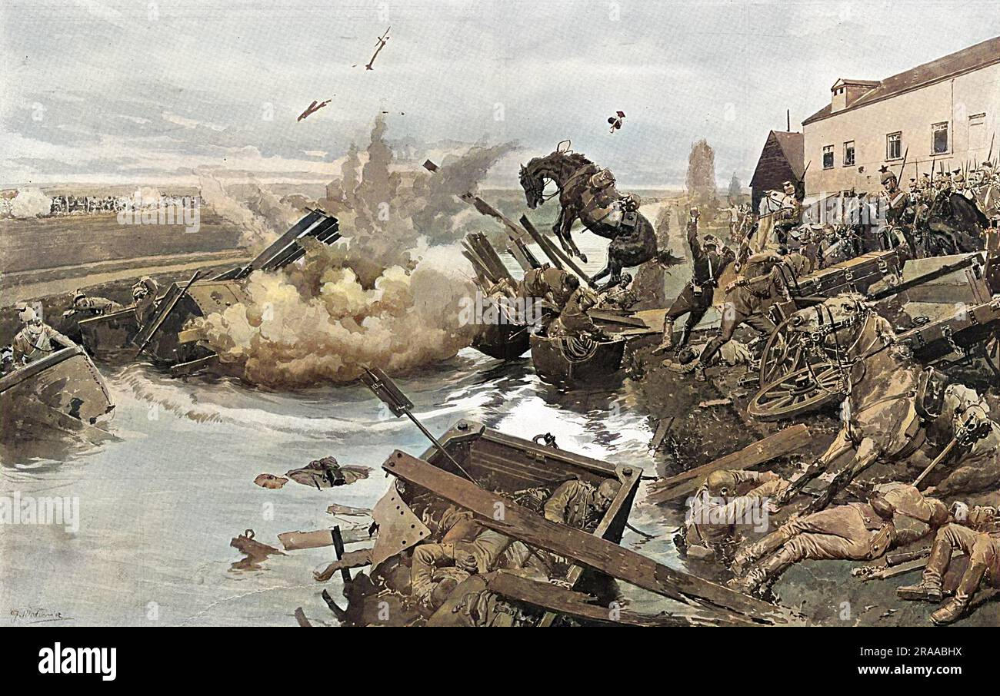
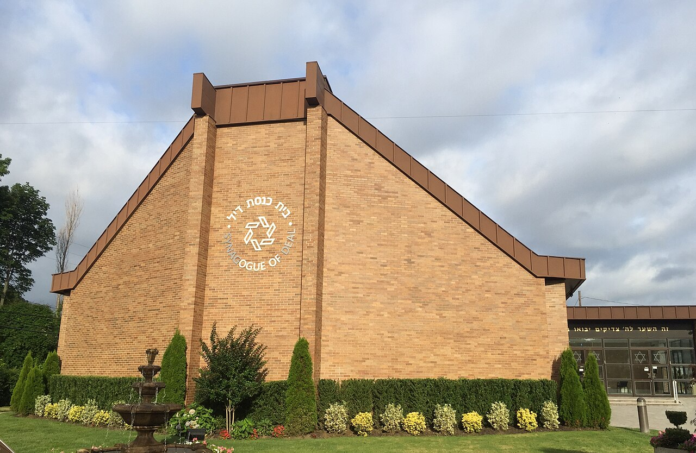

from today's featured article
painting of first day of battle,withHMS namsur in the centre left
the naval Battle of Lagostook place between a British fleet commanded by sir Edward Bascawen and a french fleet under Jean-Francois de La clue-
Sabean over 18-19 August 1759 during the Seven Year's War.The French Medieterranean Fleet successfilly passed through the strait of Gabraltar,but
was slighted by a British ship. The British fleet in Gibralter was undergoing a major refit and left port amidst great confussion, with many ships delayed
and sdailting in a second squadreen. Aware that be was purused, La Clue changerd course, but half of his ships failed to follow him in the dark . the british
caughjt the french south west of Golf of Cadir. fierce fighting ensued ,and one french ship was captured.The british pursued the remainnig six,
French ships overnight and two managed to escape. the four survivors attemped to shelter in neutralPortugueue waters near lagosbut Boscawen
violated that neutrality , capturing two of the ships and destroying other two Fall article....
Resently featured
- Illustrated Daily news
- 2019 World Snooker Championship
- Surrender of Japan
- Archive
- By email
- More Featured articles
Did you know.....

Synagogue of Deal
Ronnie_O’Sullivan
- Ronnie_O’Sullivan(pictured)win the world
snooker Championship,defeating kvren
wilson in the fuel - Ugnedan joshua Cheptegisets a new world
recordin the men's 5000 metres. - Israel and the United Arab Emirates agree to
establish diplomatic relations. - pre-democracy protests intensify in Belarus
after the contesed reclection of incumbent
president Alexander likashkenko. - jasraj
- Murtaja baseer
- Robert Trump
- Limda Manz
- Julian Baream
- Luchita Hurtado
- Other recent events
- Nominate an article
Recent deaths
On this day
August 18: Long Tan Day in australia (1996)